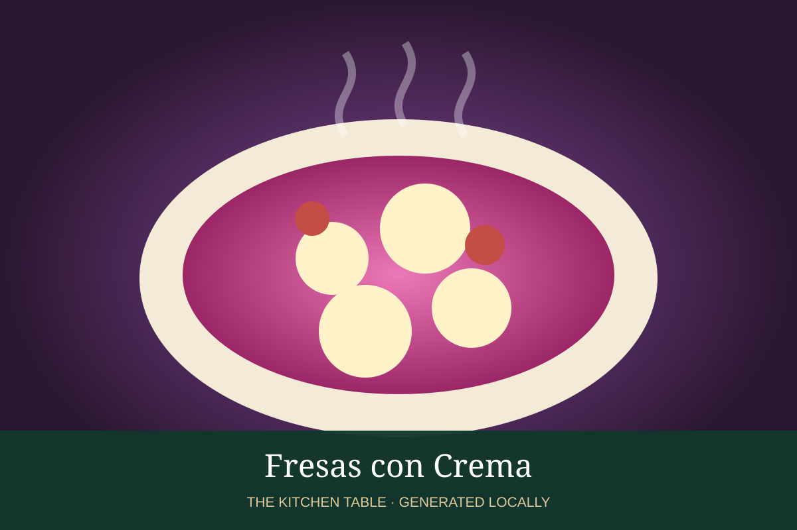

MEXICAN · DESSERTS & DRINKS
Fresas con Crema
Fresh strawberries folded into sweet Mexican crema for a fast chilled dessert.

Ingredients
- 1 lb strawberries, sliced
- 1 cup Mexican crema
- 1/3 cup sweetened condensed milk
- 1 tsp vanilla
- Pinch cinnamon
Method
- Whisk crema, condensed milk, vanilla, and cinnamon.
- Fold in sliced strawberries.
- Chill 20 minutes.
- Serve cold, with extra berries on top.